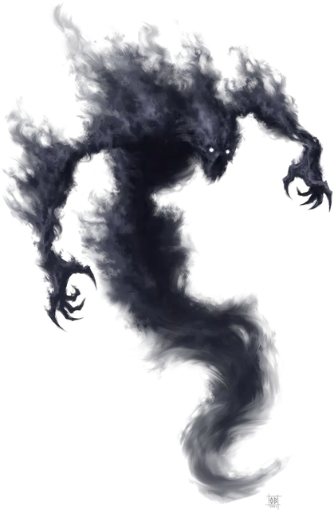

Поглотитель дыхания
Breath Drinker
Средняя Аберрация, хаотично-злая

Класс Доспеха 18 (природный доспех)
Хиты 157 (21к8 + 63)
Скорость 0 футов, летая 60 футов (парит)
| мод | спас | ||
|---|---|---|---|
| СИЛ | 5 | −3 | −3 |
| ЛОВ | 18 | +4 | +4 |
| ТЕЛ | 16 | +3 | +3 |
| мод | спас | ||
|---|---|---|---|
| ИНТ | 11 | +0 | +5 |
| МДР | 15 | +2 | +7 |
| ХАР | 20 | +5 | +5 |
Навыки Восприятие +7, Выживание +7, Скрытность +9
Уязвимость к урону некротическая энергия
Сопротивление урону звук, кислота, огонь, холод, электричество; дробящий, колющий, рубящий от немагических атак
Иммунитет к урону излучение, яд
Иммунитет к состояниям захват, окаменение, опутанность, отравление, паралич, сбивание с ног
Чувства слепое зрение 60 футов, пассивное Восприятие 17
Языки Глубинная речь, Телепатия 120 фт.
Опасность 14 (11500 опыта)
Бонус мастерства +5
Особенности
Бестелесное перемещение. Поглотитель может перемещаться сквозь других существ и предметы, как если бы они были труднопроходимой местностью. Он получает урон силовым полем 5 (1к10), если оканчивает ход внутри предмета.
Поглощение излучения. Каждый раз, когда поглотитель должен получить урон излучением, он не получает урон, и вместо этого восстанавливает количество хитов, равное причиняемому урону излучением.
Действия
Мультиатака. Поглотитель совершает две атаки Обессиливающими когтями. Он так же может использовать Поглощение дыхания.
Обессиливающие когти. . Рукопашная атака оружием: +10 к попаданию, досягаемость 5 фт., одна цель. Попадание: 12 (2к6 + 5) урона некротической энергией, и если цель Большого размера или меньше, оно становится схваченным (Сл высвобождения 18). Цель должна преуспеть в спасброске Телосложения Сл 18, иначе её максимальное значение хитов уменьшится на значение причинённого атакой урона. Это уменьшение длится, пока цель не завершит продолжительный отдых. Цель умирает, если максимум хитов опускается до 0.
Поглощение дыхания. Поглотитель нацеливается на недееспособное существо или на существо которое он держит в захвате, и которое не является Конструктом или Нежитью. Цель должна совершить спасбросок Харизмы Сл 18. При провале цель получает 36 (8к8) урона некротической энергией, а показатель её Харизмы уменьшается на 1к6. Понижение характеристики заканчивается, когда цель заканчивает короткий или продолжительный отдых. Цель умирает, если значение Харизмы опускается до 0. Пока поглотитель не умрёт, мертвая цель не может быть возвращена к жизни никакими средствами, кроме божественного вмешательства. В случае успеха цель получает только половину этого урона некротической энергией. В случае успеха или провала поглотитель восстанавливает количество хитов, равное нанесенному урону некротической энергией.
Невидимость. Поглотитель магическим образом становится невидимым, Невидимость мгновенно оканчивается после того как поглотитель попадёт или промахнётся атакой или использует Поглощение дыхания.
Описание
Поглотители дыхания - это Аберрации, что вторгаются в мультивселенную из Дальнего Царства. Они путешествуют сквозь реальность, как живые пустоты, оставаясь невидимыми в поисках душ, которые можно поглотить. Когда они наносят удар, поглотители дыхания поглощают личность жертвы, в конечном счете вытягивая и пожирая душу несчастного существа. Поглотители дыхания избегают некротической энергии, потому что она усиливает пустоту в основе их существования, быстро заставляя существ пожирать самих себя.
Хитрые охотники, поглотители дыхания, как правило, одиночки. Иногда они служат могущественным сущностям Дальнего Царства или Древнему Злу, забирая жизни и души для своих хозяев. Первый поглотитель дыхания появился в мультивселенной, когда карта Пустота была впервые извлечена из оригинальной колоды многих вещей [deck of many things].